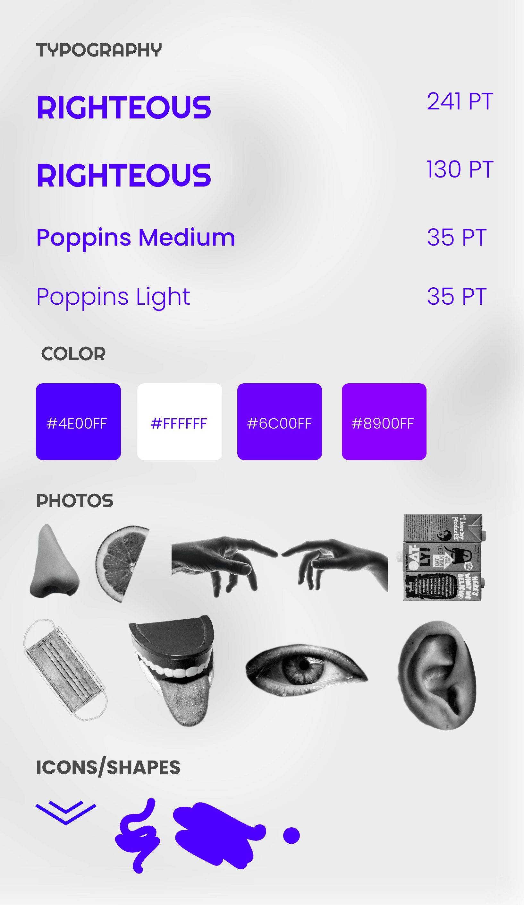
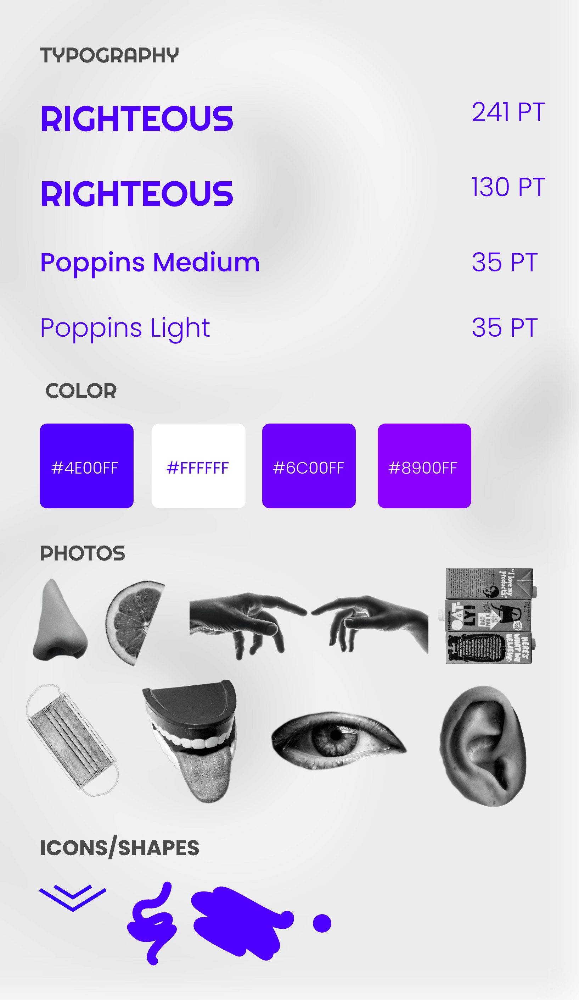

Trust your senses
Trust your senses is a concept that tells a story, on whether you can still rely on your senses, from The Correspondent in an interactive way. Here the user can click through the story, which is amplified by images and animations.
- Year: 2022
- Client: HvA
- Role: Visual Designer


 
